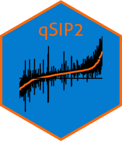

Efficiency scatter plot with labeled/unlabeled/retained categories
Source:R/plot.R
plot_filter_efficiency.RdVisualizes filtering efficiency by plotting feature retention (x-axis) versus abundance retention (y-axis) for each source. Shows three categories per source:
Unlabeled (blue): Features that passed filters in unlabeled samples
Labeled (red): Features that passed filters in labeled samples
Retained (purple): Features in the intersection (passed BOTH labeled and unlabeled)
Usage
plot_filter_efficiency(
qsip_data_object,
ncol = NULL,
nrow = NULL,
use_counts = FALSE,
show_arrows = FALSE
)Arguments
- qsip_data_object
A filtered qsip_data object (or list)
- ncol
Number of columns for faceting
- nrow
Number of rows for faceting
- use_counts
If TRUE, plot absolute feature counts; if FALSE (default), plot percentages
- show_arrows
If TRUE, draw arrows from labeled/unlabeled points to their corresponding retained point, color-coded to match the source point. Default FALSE.
Details
Interpreting the plot:
Point positions:
Points toward the top-right = high retention (most features/abundance retained)
Points toward the bottom-left = low retention (many features/abundance lost)
Retained (purple) points are always at or below both labeled and unlabeled points because the intersection cannot exceed either individual set
Arrow interpretation (when show_arrows = TRUE):
Arrows connect each labeled/unlabeled point to its corresponding retained point for the same source, showing the "cost" of requiring features to pass filters in BOTH isotopes.
Arrow direction: Always points toward bottom-left (southwest) because retained ≤ min(labeled, unlabeled) for both features and abundance
Arrow length: Indicates filtering consistency
Short arrows = Good consistency. Most features that passed one isotope also passed the other
Long arrows = Poor consistency. Many features unique to one isotope
Arrow slope: Shows where the loss occurs
Steep (vertical) = Lost features were abundant (big abundance impact)
Shallow (horizontal) = Lost features were rare (small abundance impact)
45° diagonal = Feature and abundance losses are proportional
Arrow color: Matches the source point (blue for unlabeled, red for labeled)
Asymmetric arrows: If red arrows are shorter than blue arrows (or vice versa), it indicates one isotope's passed features had better overlap with the other. Longer arrows suggest that isotope passed more marginal features that didn't consistently pass in the other isotope.
Within-group variation:
Purple (retained) points within a treatment group often have different x-axis values (% features retained). This occurs because the intersection is calculated at the group level (features passing in ANY labeled AND ANY unlabeled source), but each individual source may have a different subset of those intersection features actually present in its fractions.
If filtering required features to pass in every single source, all retained points within a group would have the same x-coordinate (vertically aligned), but the intersection would be much smaller.